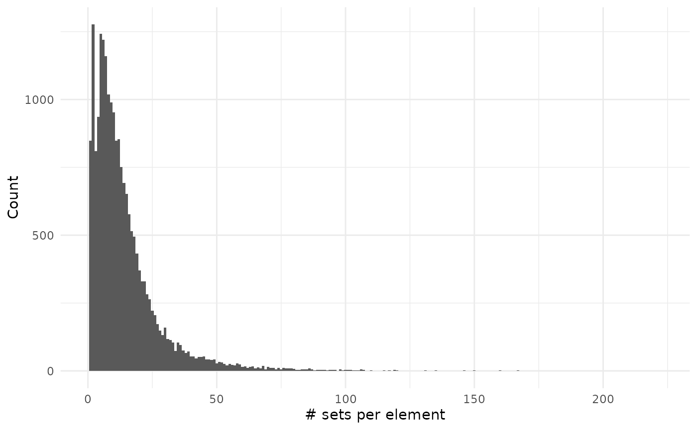

Advanced examples
Lluís Revilla
August Pi i Sunyer Biomedical Research Institute (IDIBAPS); Liver Unit, Hospital Cliniclluis.revilla@gmail.com
25 July 2019
Source:vignettes/advanced.Rmd
advanced.RmdAbstract
This vignette assumes you are familiar with set operations from the basic vignette.To show compatibility with tidy workflows we will use magrittr pipe operator
library("dplyr")
#>
#> Attaching package: 'dplyr'
#> The following objects are masked from 'package:stats':
#>
#> filter, lag
#> The following objects are masked from 'package:base':
#>
#> intersect, setdiff, setequal, union
library("BaseSet")
#>
#> Attaching package: 'BaseSet'
#> The following object is masked from 'package:dplyr':
#>
#> union
#> The following object is masked from 'package:stats':
#>
#> filter
#> The following object is masked from 'package:base':
#>
#> unionWe can create a tidySet with some sets being the intersection and the union of others:
relations <- data.frame(sets = c(rep("A", 5), "B"),
elements = letters[seq_len(6)],
fuzzy = runif(6))
sample_set <- tidySet(relations) %>%
union(c("A", "B"), "C", keep = TRUE) %>%
intersection(c("B", "C"), "D", keep = TRUE)
# Number of elements per set
sample_set %>%
relations() %>%
group_by(sets) %>%
count()
#> # A tibble: 4 x 2
#> # Groups: sets [4]
#> sets n
#> <fct> <int>
#> 1 A 5
#> 2 B 1
#> 3 C 6
#> 4 D 1
# size of the sets and probability
sample_set %>%
set_size()
#> sets size probability
#> 1 A 0 0.004412976
#> 2 A 1 0.274918517
#> 3 A 2 0.388727141
#> 4 A 3 0.219155245
#> 5 A 4 0.052449587
#> 6 A 5 0.060336535
#> 7 B 0 0.501769436
#> 8 B 1 0.498230564
#> 9 C 0 0.002214296
#> 10 C 1 0.167247837
#> 11 C 2 0.331621452
#> 12 C 3 0.304241239
#> 13 C 4 0.136097391
#> 14 C 5 0.028516279
#> 15 C 6 0.030061506
#> 16 D 0 0.501769436
#> 17 D 1 0.498230564Human GO
We will explore the genes related with GO.
# We load some libraries
library("org.Hs.eg.db")
#> Loading required package: AnnotationDbi
#> Loading required package: stats4
#> Loading required package: BiocGenerics
#> Loading required package: parallel
#>
#> Attaching package: 'BiocGenerics'
#> The following objects are masked from 'package:parallel':
#>
#> clusterApply, clusterApplyLB, clusterCall, clusterEvalQ,
#> clusterExport, clusterMap, parApply, parCapply, parLapply,
#> parLapplyLB, parRapply, parSapply, parSapplyLB
#> The following object is masked from 'package:BaseSet':
#>
#> union
#> The following objects are masked from 'package:dplyr':
#>
#> combine, intersect, setdiff, union
#> The following objects are masked from 'package:stats':
#>
#> IQR, mad, sd, var, xtabs
#> The following objects are masked from 'package:base':
#>
#> anyDuplicated, append, as.data.frame, basename, cbind,
#> colnames, dirname, do.call, duplicated, eval, evalq, Filter,
#> Find, get, grep, grepl, intersect, is.unsorted, lapply, Map,
#> mapply, match, mget, order, paste, pmax, pmax.int, pmin,
#> pmin.int, Position, rank, rbind, Reduce, rownames, sapply,
#> setdiff, sort, table, tapply, union, unique, unsplit, which,
#> which.max, which.min
#> Loading required package: Biobase
#> Welcome to Bioconductor
#>
#> Vignettes contain introductory material; view with
#> 'browseVignettes()'. To cite Bioconductor, see
#> 'citation("Biobase")', and for packages 'citation("pkgname")'.
#> Loading required package: IRanges
#> Loading required package: S4Vectors
#>
#> Attaching package: 'S4Vectors'
#> The following object is masked from 'package:BaseSet':
#>
#> active
#> The following objects are masked from 'package:dplyr':
#>
#> first, rename
#> The following object is masked from 'package:base':
#>
#> expand.grid
#>
#> Attaching package: 'IRanges'
#> The following objects are masked from 'package:dplyr':
#>
#> collapse, desc, slice
#>
#> Attaching package: 'AnnotationDbi'
#> The following object is masked from 'package:BaseSet':
#>
#> select
#> The following object is masked from 'package:dplyr':
#>
#> select
#>
library("GO.db")
#>
library("ggplot2")
# Prepare the data
h2GO_TS <- tidySet(org.Hs.egGO)
h2GO <- as.data.frame(org.Hs.egGO)We can now explore if there are differences in evidence usage for each ontology in GO:
library("forcats")
h2GO %>%
group_by(Evidence, Ontology) %>%
count(name = "Freq") %>%
ungroup() %>%
mutate(Evidence = fct_reorder2(Evidence, Ontology, -Freq)) %>%
ggplot() +
geom_col(aes(Evidence, Freq)) +
facet_grid(~Ontology) +
theme_bw() +
coord_flip() +
xlab("Evidence") We can see that This graph doesn’t consider that some relationships are better annotated than other:
We can see that This graph doesn’t consider that some relationships are better annotated than other:
h2GO_TS %>%
relations() %>%
group_by(elements, sets) %>%
count(sort = TRUE) %>%
ggplot() +
geom_histogram(aes(n), binwidth = 1) +
theme_minimal() +
# scale_y_log10() +
labs(x = "Evidence codes",
title = "Evidence codes for each relation between GO and a gene",
subtitle = "in human annotation") We can see that mostly all the annotations are done with a single evidence code. So far we have explored the code that it is related to a gene but how many genes don’t have any annotation?
We can see that mostly all the annotations are done with a single evidence code. So far we have explored the code that it is related to a gene but how many genes don’t have any annotation?
# Add all the genes and GO terms
library("GO.db")
h2GO_TS <- add_elements(h2GO_TS, keys(org.Hs.eg.db)) %>%
add_sets(grep("^GO:", keys(GO.db), value = TRUE))
sizes_element <- element_size(h2GO_TS) %>%
arrange(desc(size))
sum(sizes_element$size == 0)
#> [1] 41314
sum(sizes_element$size != 0)
#> [1] 20207
sizes_set <- set_size(h2GO_TS) %>%
arrange(desc(size))
sum(sizes_set$size == 0)
#> [1] 27553
sum(sizes_set$size != 0)
#> [1] 17496So we can see that both there are more genes without annotation and more GO terms without a (direct) gene annotated.
sizes_element %>%
filter(size != 0) %>%
ggplot() +
geom_histogram(aes(size), binwidth = 1) +
theme_minimal() +
labs(x = "# sets per element", y = "Count")
sizes_set %>%
filter(size != 0) %>%
ggplot() +
geom_histogram(aes(size), binwidth = 1) +
theme_minimal() +
labs(x = "# elements per set", y = "Count")As you can see on the second plot we have very large values but that are on associated on many genes:
head(sizes_set, 10)
#> sets size probability Ontology
#> 1 GO:0005515 9664 1 MF
#> 2 GO:0005829 4871 1 CC
#> 3 GO:0005634 4561 1 CC
#> 4 GO:0005886 4271 1 CC
#> 5 GO:0016021 3490 1 CC
#> 6 GO:0005737 3433 1 CC
#> 7 GO:0005654 3123 1 CC
#> 8 GO:0046872 2267 1 MF
#> 9 GO:0070062 2162 1 CC
#> 10 GO:0005576 1865 1 CCHuman pathways
Now we will repeat the same analysis with pathways:
# We load some libraries
library("reactome.db")
# Prepare the data (is easier, there isn't any ontoogy or evidence column)
h2p <- as.data.frame(reactomeEXTID2PATHID)
colnames(h2p) <- c("sets", "elements")
# Filter only for human pathways
h2p <- h2p[grepl("^R-HSA-", h2p$sets), ]
# There are duplicate relations with different evidence codes!!:
summary(duplicated(h2p[, c("elements", "sets")]))
#> Mode FALSE TRUE
#> logical 110537 11877
h2p <- unique(h2p)
# Create a tidySet and
h2p_TS <- tidySet(h2p) %>%
# Add all the genes
add_elements(keys(org.Hs.eg.db))Now that we have everything ready we can start measuring some things..
sizes_element <- element_size(h2p_TS) %>%
arrange(desc(size))
sum(sizes_element$size == 0)
#> [1] 50902
sum(sizes_element$size != 0)
#> [1] 10696
sizes_set <- set_size(h2p_TS) %>%
arrange(desc(size))We can see there are more genes without pathways than genes with pathways.
sizes_element %>%
filter(size != 0) %>%
ggplot() +
geom_histogram(aes(size), binwidth = 1) +
scale_y_log10() +
theme_minimal() +
labs(x = "# sets per element", y = "Count")
#> Warning: Transformation introduced infinite values in continuous y-axis
#> Warning: Removed 249 rows containing missing values (geom_bar).
sizes_set %>%
ggplot() +
geom_histogram(aes(size), binwidth = 1) +
scale_y_log10() +
theme_minimal() +
labs(x = "# elements per set", y = "Count")
#> Warning: Transformation introduced infinite values in continuous y-axis
#> Warning: Removed 2466 rows containing missing values (geom_bar). As you can see on the second plot we have very large values but that are on associated on many genes:
As you can see on the second plot we have very large values but that are on associated on many genes:
Session info
#> R version 3.6.1 (2017-01-27)
#> Platform: x86_64-pc-linux-gnu (64-bit)
#> Running under: Ubuntu 16.04.6 LTS
#>
#> Matrix products: default
#> BLAS: /home/travis/R-bin/lib/R/lib/libRblas.so
#> LAPACK: /home/travis/R-bin/lib/R/lib/libRlapack.so
#>
#> locale:
#> [1] LC_CTYPE=en_US.UTF-8 LC_NUMERIC=C
#> [3] LC_TIME=en_US.UTF-8 LC_COLLATE=en_US.UTF-8
#> [5] LC_MONETARY=en_US.UTF-8 LC_MESSAGES=en_US.UTF-8
#> [7] LC_PAPER=en_US.UTF-8 LC_NAME=C
#> [9] LC_ADDRESS=C LC_TELEPHONE=C
#> [11] LC_MEASUREMENT=en_US.UTF-8 LC_IDENTIFICATION=C
#>
#> attached base packages:
#> [1] parallel stats4 stats graphics grDevices utils datasets
#> [8] methods base
#>
#> other attached packages:
#> [1] reactome.db_1.68.0 forcats_0.4.0 ggplot2_3.2.0
#> [4] GO.db_3.8.2 org.Hs.eg.db_3.8.2 AnnotationDbi_1.47.0
#> [7] IRanges_2.19.10 S4Vectors_0.23.17 Biobase_2.45.0
#> [10] BiocGenerics_0.31.5 BaseSet_0.0.0.9003 dplyr_0.8.3
#> [13] BiocStyle_2.13.2
#>
#> loaded via a namespace (and not attached):
#> [1] tidyselect_0.2.5 xfun_0.8 reshape2_1.4.3
#> [4] purrr_0.3.2 colorspace_1.4-1 vctrs_0.2.0
#> [7] htmltools_0.3.6 yaml_2.2.0 utf8_1.1.4
#> [10] blob_1.2.0 rlang_0.4.0 pkgdown_1.3.0
#> [13] pillar_1.4.2 withr_2.1.2 glue_1.3.1
#> [16] DBI_1.0.0 bit64_0.9-7 plyr_1.8.4
#> [19] stringr_1.4.0 munsell_0.5.0 commonmark_1.7
#> [22] gtable_0.3.0 memoise_1.1.0 evaluate_0.14
#> [25] labeling_0.3 knitr_1.23 fansi_0.4.0
#> [28] Rcpp_1.0.2 backports_1.1.4 scales_1.0.0
#> [31] BiocManager_1.30.4 desc_1.2.0 fs_1.3.1
#> [34] bit_1.1-14 digest_0.6.20 stringi_1.4.3
#> [37] bookdown_0.12 rprojroot_1.3-2 grid_3.6.1
#> [40] cli_1.1.0 tools_3.6.1 magrittr_1.5
#> [43] lazyeval_0.2.2 tibble_2.1.3 RSQLite_2.1.2
#> [46] crayon_1.3.4 pkgconfig_2.0.2 zeallot_0.1.0
#> [49] ellipsis_0.2.0.1 MASS_7.3-51.4 xml2_1.2.0
#> [52] assertthat_0.2.1 rmarkdown_1.14 roxygen2_6.1.1
#> [55] R6_2.4.0 compiler_3.6.1